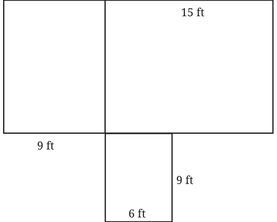
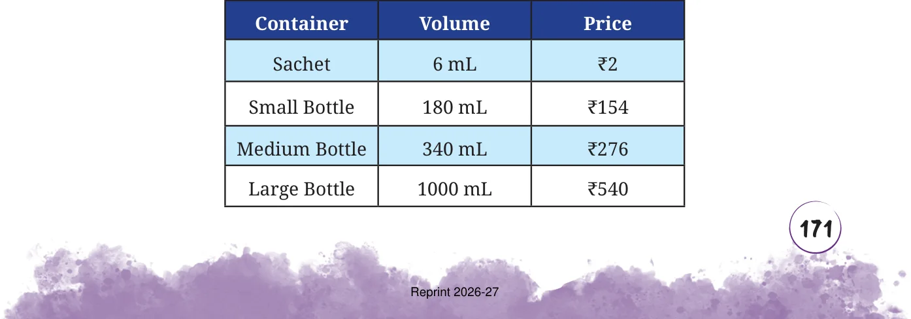
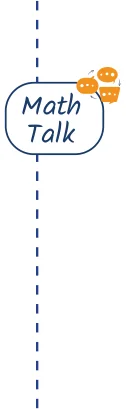

- 1.The Earth travels approximately 940 million kilometres around the
Sun in a year. How many kilometres will it travel in a week?
- 2.A mason is building a house in the shape shown in the diagram. He
needs to construct both the outer walls and the inner wall that

separates two rooms. To build a wall of 10-feet, he requires approximately 1450 bricks. How many bricks would he need to build the house? Assume all walls are of the same height and thickness.

12 ft
Puneeth’s father went from Lucknow to Kanpur in 2 hours by riding his motorcycle at a speed of 50 km/h. If he drives at 75 km/h, how long will it take him to reach Kanpur? Can we form this problem as a proportion -
50 : 2 :: 75 : __
Would it take Puneeth’s father more time or less time to reach Kanpur? Think about it. Even though this problem looks similar to the previous problems, it cannot be solved using the Rule of Three! The time of travel would actually decrease when the speed increases. So this problem cannot be modelled as 50 : 2 :: 75 : __. Activity 2: Go to the market and collect the prices of different sizes of shampoo containers of the same shampoo and create a table like the one given below. See if the volume of shampoo is proportional to the price.


Let us compare the ratios for the sample table above. The ratio of the volume of a sachet to a small bottle is 6 : 180. The ratio of their prices is 2 : 154. Are these ratios proportional? Why do you think that the ratio of the prices is not proportional to the ratio of the volumes? Discuss the pros and cons of different size bottles for the company and for customers. For reducing ecological footprint, what would you recommend to the company and to the customer? Does the same occur for other products? Make similar tables for other products in the market, capturing different prices for different measures of the same product, e.g., rice or atta (flour). Observe the products for which the prices are proportional to the different measures. Discuss in class the proportionality of prices to measures of the same product.

Note to the Teacher: Give a project to students. Start by dividing the class into groups. Each group should go to one shop and collect prices for different measures of the same product. For example, they should note down the prices of 500 g of rice, 1 kg of rice, and 10 kg of rice. They should make tables with measure sizes and prices, and present them to the rest of the class. They should discuss if the prices are proportional or not, and why.